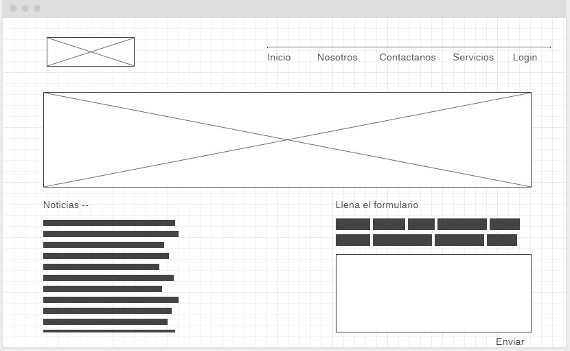

¿Qué es CSS?
CSS significa Cascading Style Sheets (Hoja de Estilos en Cascada).
El lenguaje CSS describe cómo se mostrarán los elementos HTML en la pantalla.
El lenguaje CSS ahorra mucho trabajo, ya que permite controlar el diseño de varias páginas web a la vez.
Todas las hojas de estilo externas se almacenan en archivos CSS.
¿Por qué usar CSS?
El lenguaje CSS se utiliza para definir los estilos de tus páginas web, incluyendo el diseño, la disposición y las variaciones en la imagen para los diferentes dispositivos y tamaños de pantalla .
El lenguaje CSS facilita mucho las cosas
La intención del lenguaje HTML no es contener etiquetas para dar formato a una página web, sino describir el contenido, como por ejemplo aquí:
Tres formas de insertar CSS
Hay tres maneras de insertar una hoja de estilo:
Hoja de estilos externa
Hoja de estilos interna
Estilo en línea
Hoja de estilos externa
Con una hoja de estilos externa, puedes cambiar el aspecto de un sitio web completo cambiando un sólo archivo.
Para ello cada página debe incluir una referencia al archivo de hoja de estilos externa dentro del elemento que se encuentra dentro de la sección
Una hoja de estilo externa se puede escribir desde cualquier editor de texto, debe ser guardado con la extensión .css y no puede contener ninguna etiqueta HTML .
Hoja de estilos interna
Una hoja de estilo interna se puede usar en una sólo página con un estilo único. Los estilos internos se definen dentro del elemento dentro de la propia
página HTML:
body {
background-color: #FFFFFF;
}
h1 {
color: #000000;
text-align: center;
}
Estilos en línea
Un estilo en línea se puede utilizar aplicándolo al estilo de un solo elemento. Para ello tienes que añadir el atributo de estilo al elemento en cuestión, pudiendo contener cualquier propiedad CSS, como por ejemplo la siguiente:
Orden en cascada
Supongo que si estás utilizando los tres tipos de CSS te preguntarás cuál prevalece, ¿no? Pues como bien indica su nombre siguen un orden en cascada con esta prioridad:
Estilo en línea (dentro de un elemento HTML )
Hojas de estilo externas e internas (en la sección de cabecera )
Las que viene por defecto en el navegador
Por lo tanto, un estilo en línea (dentro de un elemento HTML específico) tiene la prioridad más alta, lo que significa que va a anular los estilos definidos dentro de la etiqueta, aquellos recogidos en una hoja de estilos externa (archivo.css) o incluso los que trae por defecto el navegador .
Sintaxis CSS
Un conjunto de reglas CSS consta de un selector y de un bloque de declaración:
css-sintaxis
El selector hace referencia al elemento HTML al que le queremos aplicar el estilo, mientras que el bloque de declaración contiene una o más declaraciones separadas por punto y coma.
Cada declaración incluye un nombre de propiedad CSS y un valor, separados por dos puntos.
Una declaración CSS siempre termina con un punto y coma, y los bloques de declaraciones están rodeados por llaves .
En el siguiente ejemplo todos los elementos de párrafo tendrán el texto azul y centrado:
p {
color: blue;
text-align: center;
}
Los selectores CSS
Los selectores CSS se utilizan para «encontrar» (o seleccionar) elementos HTML en función del nombre del elemento, del id , de la clase, del atributo, etc.
El selector de elementos
El selector de elementos elige elementos en función del nombre de los mismos. Por ejemplo, podríamos seleccionar todos los elementos
en una página, alinearlos a la izquierda y ponerlos en color rojo de la siguiente manera:
h2 {
text-align: left;
color: red;
}
El selector de ID
El selector de ID utiliza el atributo id de un elemento HTML para seleccionar un elemento específico, esto quiere decir que será único dentro de una página.
Para ello debes utilizar el símbolo de la almohadilla (#) delante del atributo id. Si por ejemplo tenemos un id=parrafo1 que queremos centrar y poner en color azul, la regla de estilo sería la siguiente:
#parrafo1 {
text-align: center;
color: blue;
}
El selector de clase
El selector de clase elige los elementos con un atributo de clase específico. Para ello tienes que escribir un punto (.) delante del nombre de la clase .
Por ejemplo, podemos decidir que aquellos atributos con clase «newsletter» estén centrados y sean rojos:
.newsletter {
text-align: center;
color: red;
}
Otro caso posible sería que quisieras añadir la clase «newsletter» sólo a los elementos de párrafo, entonces quedaría de la siguiente forma:
p.newsletter {
text-align: center;
color: red;
}
¿Y si quieres que tus elementos HTML hagan referencia a más de una clase? Pues también es posible
Este parrafo tiene en cuenta la clase newsletter y centrado
La agrupación de selectores
Si tienes varios elementos a los que quieres aplicarles los mismos estilos también se puede hacer.
Para ello tienes que separar cada selector con una coma como en el siguiente ejemplo:
h1, h2, p {
text-align: center;
color: red;
}
Comentarios CSS
Los comentarios se utilizan para explicar el código, de manera que si en un futuro quieres editarlo sea más sencillo entenderlo. Para que éstos sean ignorados por los navegadores tiene que ir entre estos símbolos: al inicio y al final .
h2 {
color: blue;
Esto es un comentario
text-align: center;
}
Mockup
